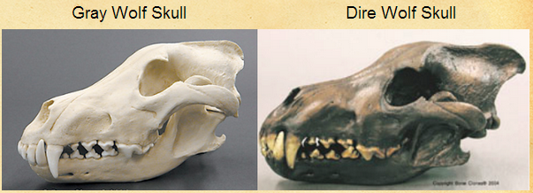
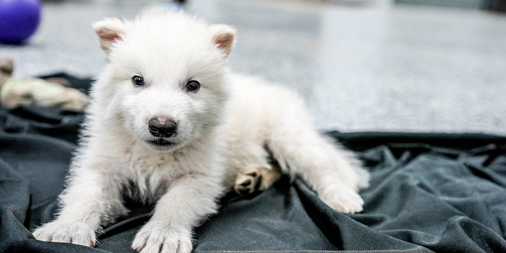

The Evolution of Dire Wolves
The dire wolf (Canis dirus) was a large carnivore that lived during the Late Pleistocene and Early Holocene epochs (125,000–9,500 years ago). Contrary to popular belief, dire wolves were not direct ancestors of modern gray wolves but rather evolutionary cousins.

Comparison of dire wolf (left) and modern wolf (right) skulls
5.7 mya
Common Ancestor
Dire wolves and gray wolves diverge from a shared ancestor
250,000 ya
Dire Wolf Emergence
Canis dirus appears in North America
10,000 ya
Extinction
Last dire wolves disappear during Quaternary extinction event
Physical Characteristics
Dire wolves were about 25% heavier than modern gray wolves, weighing between 130-150 pounds (59-68 kg) on average. They had shorter, stouter legs and a larger, broader head with massive jaws capable of generating enormous bite force.
130-150 lbs
Average Weight
5-5.5 ft
Body Length
1,200 N
Bite Force
20% smaller
Brain Size
